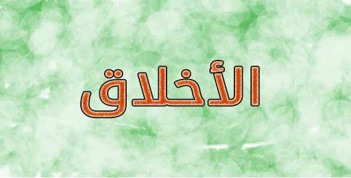

اليوم الثاني: الأخلاق الحميدة
أهلًا برمضان، شهر الإحسان، شهر البركة والغفران.
رمضان… أجواء رائعة، ومشاعر جميلة، وإيمانًا قويًا، ولسانًا رطبًا بذكر الله تعالى.
علينا أن نتقرب إلى الله تعالى في رمضان بأخلاقنا مع الناس أولًا، ولدينا مرجع جميل جدًا، ومعلّمًا صالحًا، ونبيًا ورسولًا وحبيبًا، بعثه الله ليتمم مكارم الأخلاق، سيدنا محمد ﷺ، حيث قال:
«إنما بُعثتُ لأتمم مكارمَ الأخلاق»
حديث صحيح – رواه أحمد.
كان ﷺ أحسن الناس خُلُقًا، وأجملهم تعاملًا، وكان يقول ﷺ:
«إنَّ من أحبِّكم إليَّ، وأقربِكم مني مجلسًا يومَ القيامة، أحاسِنَكم أخلاقًا»
حديث حسن صحيح – رواه الترمذي.
كان ﷺ يطلب منا حسن الخُلُق، فمكانة المؤمن عند نبينا ﷺ لا تُنال بكثرة الكلام، بل بلين القلب وحسن التعامل. قال الصحابي الجليل وخادم النبي ﷺ أنس بن مالك رضي الله عنه:
«خدمتُ رسولَ الله ﷺ عشرَ سنين، فما قال لي أُفٍّ قط،
ولا قال لشيءٍ فعلتُه: لِمَ فعلتَه؟
ولا لشيءٍ لم أفعلْه: ألا فعلتَ كذا؟»
رواه البخاري ومسلم.
العِبرة من هذا الحديث وهذا الموقف أن القوة الحقيقية ليست في الغضب أبدًا، بل في الرحمة والاحترام، والصبر على كل شيء، حتى على الناس.
يجب أن نرحم بعضنا بعضًا، وأن نتحكم بغضبنا، كما فعل النبي ﷺ عندما دخل أعرابي فبال في المسجد، فغضب الصحابة، فقال النبي ﷺ:
«دعوه، لا تُزرِموه»
ثم دعاه وعلّمه بلطف، ولم يُعنّفه.
رواه البخاري ومسلم.
هنا لم يصرخ النبي ﷺ، ولم يقف ليحاسب، لأنه كان يعلم أن الدعوة لا تكون بالصراخ، وأن التعليم يكون بالحكمة والرحمة، حتى مع المخطئين، لنتلمس قلوبهم.
فعندما نتمالك أنفسنا، تزداد ثقتنا بأنفسنا، ويزداد حبنا لذواتنا، ونشعر بالراحة بعد مدة قصيرة، ونفتخر بهذا الفعل، لأن هذه هي القوة الحقيقية.
وقد قال رسول الله ﷺ:
«ليس الشديدُ بالصُّرَعة،
إنما الشديدُ الذي يملكُ نفسَه عند الغضب»
رواه البخاري ومسلم.
وهنا يقصد حبيبنا ﷺ أن التحكم بالغضب عبادة، وأن حسن الخُلُق يظهر وقت الشدة، لا وقت الراحة.
ودعونا نتذكر قصة المرأة اليهودية التي كانت تؤذي النبي ﷺ بإلقاء الأذى عليه، فلما مرضت، ذهب النبي ﷺ يعودها، فدهشت من خُلُقه، فكان ذلك سببًا في إسلامها.
وهنا نرى كيف أن الأخلاق قد تهدي القلوب أكثر من ألف كلمة.
عندما تتكلم مع أهلك، وإخوتك، وأصدقائك، كن ليّنًا معهم، كن لطيفًا، ودع محبتك تدخل قلوبهم. تعلّم من نبينا وحبيبنا ﷺ، فلا شيء في الدنيا يستحق القسوة.
وإن كان هناك أحد أخطأتَ بحقه، فسامحه واطلب منه السماح من اليوم الأول في رمضان. اعفُ واصفح، وكن طيب القلب، جميل اللسان.
لا تدع الدنيا تُنسيك من أنت، ولماذا أنت هنا. فرسالة الإسلام ليست صيامًا وصلاةً فقط، بل تهذيبٌ للنفس، وتصفيةٌ للنيّات، وحسنُ التعامل مع الناس، وضبطُ اللسان.
نصيحة مني: إن خرجتَ من هذا النص بشيء واحد فقط، فليكن قلبك ألين، ولسانك أطيب، ونواياك أقرب إلى الله… فهذا هو الفوز الحقيقي. ربما لن نكون كما نتمنى في هذا رمضان، لكن يكفينا أن نكون أصدق، أهدأ، وأقرب إلى الله مما كنا عليه قبل أن يبدأ.